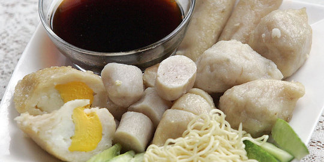

10.PEMPEK

Pempek yang merupakan makanan khas Sumatera Selatan, khususnya Palembang dibuat dari olahan tepung dan ikan. Dalam penyajiannya selalu ditemani saus berwarna cokelat kehitaman yang disebut cuko atau cuka. Selain cuko, pempek juga disantap dengan hidangan pelengkap berupa irisan dadu timun segar dan mie kuning.
Resep Pempek
Bahan
1 kg daging ikan tenggiri yang telah digiling halus,
1 kg tepung sagu,
250 ml air es,
penyedap rasa secukupnya,
garam secukupnya
Cara Pembuatannya
1.Masukkan ikan, garam, penyedap rasa dan air es, lalu campurkan hingga merata.
2.Tambahkan tepung sedikit demi sedikit, aduk hingga adonan menjadi kalis.
3.Bentuk adonan sesuai seleramu.Rebus adonan pempek yang telah dibentuk ke air mendidih.
4.Jika adonan telah mengapung, itu artinya pempek sudah matang. Tiriskan.
5.Kamu bisa langsung menyajikannya atau bisa digoreng dulu.
6.Jangan lupa gunakan cuko biar lebih mantap.